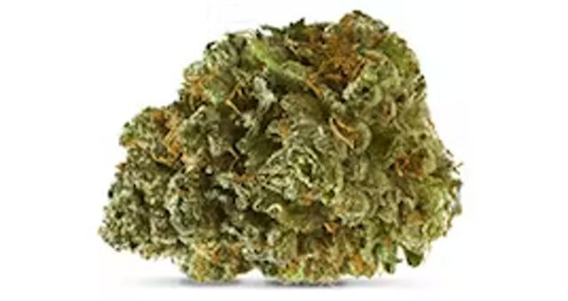
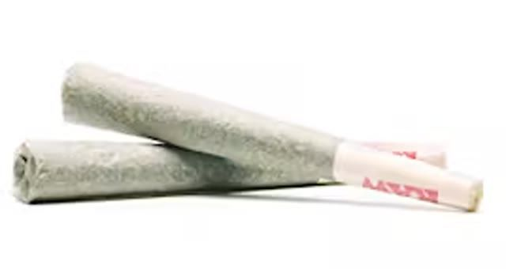
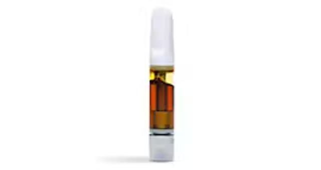
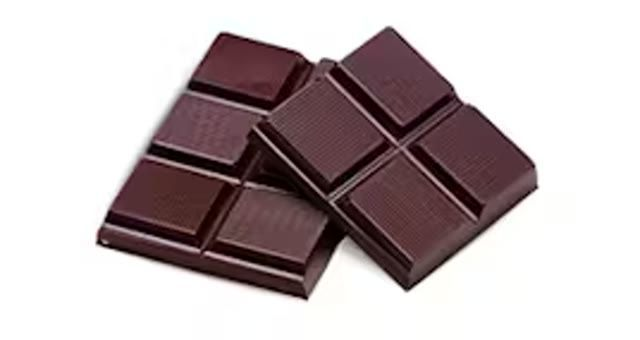
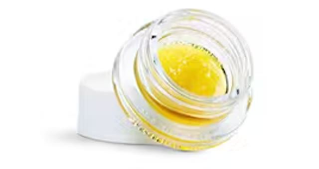
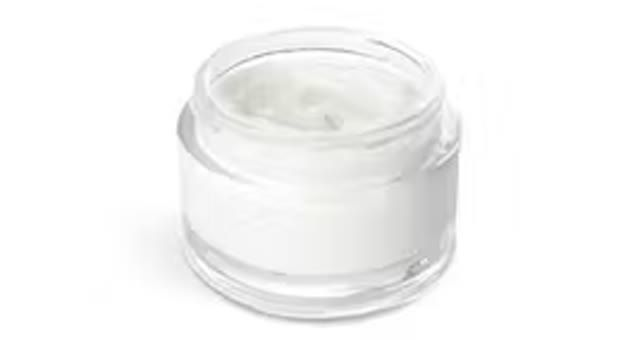
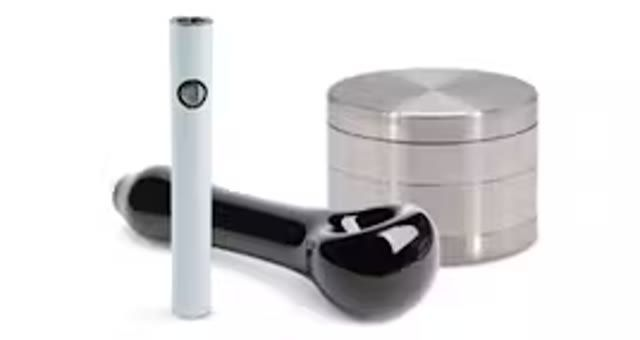
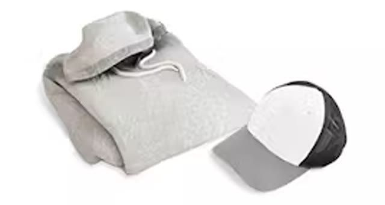
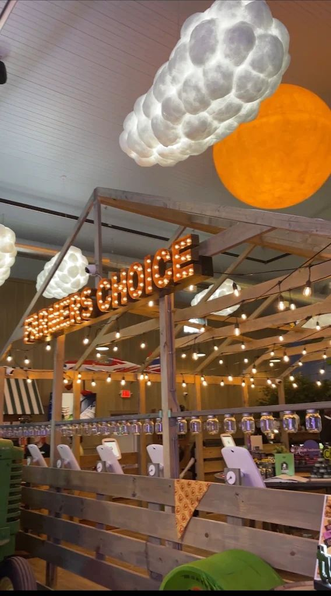

The region's farm-market cannabis dispensary destination, rooted right where Route 299 meets the Shawangunks. Open daily from 8 AM to 10 PM, every day of the week, including holidays.
Farmers Choice New Paltz is not just a dispensary. It is a destination built in the spirit of the farm markets this valley grew up on. The barn-style architecture, welcoming moss wall, and glowing marquee sign let you know this place was made with intention. Maybelline the cow keeps a friendly eye on things, and on-site EV charging lets your car top off while you browse.
A Hudson Valley Original
Built for This Valley
Sitting at the gateway to the Shawangunks, minutes from the rail trail, Huguenot Street, and Water Street Market, Farmers Choice was designed to be part of the New Paltz landscape. Park once, breathe it in, and stay a while.
Friendly Guidance
The Farm Hands Are Here for You
Whether this is your first visit or you are a seasoned regular with a preferred terpene profile, the Farm Hands meet you where you are. Plain answers for beginners and sharp picks for experienced shoppers make every visit feel like a trip to the farm, not a transaction.
Farm-Fresh Picks
What's on the Shelves
Every product at Farmers Choice New Paltz is sourced from licensed New York producers and arrives fully lab-tested. From classic flower to innovative beverages, the full spectrum is stocked and ready, curated for quality, not just quantity.

Cannabis Flower
Premium New York-grown flower spanning indica, sativa, and hybrid varieties across a range of potency levels and flavor profiles.

Pre-Rolls
Ready-to-enjoy rolls for when you want to skip the prep. Singles and multipacks are available from trusted New York producers.

Vaporizers
Discreet, convenient, and consistent cartridges and all-in-one vape pens across a wide range of strains and oil types.

Edibles
Precisely dosed, lab-tested chocolates, gummies, and more for those who prefer to skip smoke entirely.

Concentrates
High-potency wax, shatter, live resin, and rosin for experienced consumers, all from leading New York producers.
Beverages
Sessionable, refreshing, and easy-to-dose cannabis-infused drinks that offer a social alternative for any occasion.
Explore the Menu
More Ways to Enjoy
Beyond flower and edibles, the shelves carry a full range of formats to suit every lifestyle and preference. Newcomers can find gentle entry points, while longtime enthusiasts can explore more specialized options.
Tinctures
Sublingual drops for measured, flexible use. Take them on their own or add them to food and drink for precise dose control.

Topicals
Non-intoxicating balms, creams, and lotions for targeted application after a hike in the Gunks or a long day on the trail.

Accessories
Pipes, grinders, papers, storage, and other quality gear curated to complement your selections from the shelves.

Apparel
Farmers Choice hoodies, hats, and more, ready to wear on your next visit down Route 299.
Visit, Pick Up, or Get It Delivered
Find Us in New Paltz
Farmers Choice is right where Route 299 meets the NYS Thruway at Exit 18, the natural first stop heading into New Paltz. From downtown or the SUNY campus, drive a few minutes east on Route 299 toward the Thruway. Look for the barn.
Open Every Day
8 AM to 10 PM
Sunday - Saturday
8 AM - 10 PM
Open 365 days a year unless otherwise posted, including holidays.
Tesla, ChargeHub, and PlugShare compatible charging is available on site while you browse.
Local Delivery
Delivery is available across the New Paltz side of Ulster County. Check your address online for coverage.
Order Ahead
Browse the live menu and pay at pickup. Most orders are ready within the hour.
Know Before You Go
First Visit? Here's Everything You Need to Know
Walking into a cannabis dispensary for the first time can feel like a lot. We have made it easy. No appointments, no pressure, just good people ready to help.
What do I need to bring?
Bring a valid government-issued photo ID proving you are 21 or older. No medical card, appointment, or paperwork is required.
Can I order ahead for pickup?
Yes. Browse the live online menu and add what you want. Most orders are ready within the hour, and you pay at pickup.
Is Farmers Choice licensed?
Yes. The New Paltz store is licensed by the New York State Office of Cannabis Management under license OCM-RETL-24-000119. Every product comes from a licensed New York producer and is independently lab-tested.
Can I consume on site?
No. New York law prohibits on-site consumption. Our Farm Hands can help you choose products to enjoy safely and responsibly at home.
How far are Kingston and Poughkeepsie?
Kingston is about 18 miles north, roughly 25 minutes down the Thruway. Poughkeepsie is about 25 minutes east across the Mid-Hudson Bridge.
Is there parking and EV charging?
Yes. About 35 to 37 parking spaces are available, plus EV charging compatible with Tesla, ChargeHub, and PlugShare.
Rooted in the Hudson Valley
More Than a Dispensary, a Neighbor
Farmers Choice New Paltz was built to belong here. Sitting at the gateway to the Shawangunks, steps from the rail trail and minutes from some of the most beautiful landscapes in the Northeast, the barn architecture, farm-stand feel, and locally sourced products reflect the spirit of this corner of Ulster County.
Adult-use cannabis deserves a home that is warm, honest, and genuinely welcoming. Every customer should feel like a regular, whether it is a first visit or a fiftieth.

Explore the Hudson Valley
Make a Day of It Around New Paltz
Farmers Choice is right on the way to some of the best the region has to offer. Swing through before a hike, after a winery visit, or as the anchor of a full Hudson Valley day out.
Twin Star Orchards
Cider, wood-fired pizza, and beautiful orchard rows, literally around the corner from the farm stand.
Robibero Winery
Lawn, live music, and mountain views, plus the beloved summer Sangria Festival.
Mohonk Mountain House
The storybook Victorian castle resort perched on its own sky lake, and one of New York's most breathtaking properties.
Mohonk Preserve
Classic Gunks hiking, the legendary Labyrinth scramble, and some of the best climbing and trekking in the country.
Minnewaska State Park
Sky-lake carriage roads and dramatic white cliffs, just fifteen minutes from downtown New Paltz.
Walkway Over the Hudson
The world's longest elevated pedestrian bridge, a short trip east in Highland with sweeping river views.
More Nearby Favorites
Even More to Explore
Skydive The Ranch
Tandem jumps over the Wallkill Valley, and one of the region's biggest adrenaline draws.
Wallkill Valley Rail Trail
Twenty-two flat, scenic miles over the Rosendale Trestle, walkable right from town.
Historic Huguenot Street
Stone houses from the 1600s on one of America's oldest streets, with tours, galleries, and events.
Water Street Market
A stone-and-timber courtyard of independent shops, galleries, and eateries just off Main Street.
Our Service Area
Serving the Whole New Paltz Region
Farmers Choice New Paltz is a convenient licensed dispensary for a wide swath of Ulster County and beyond. Whether you are coming from across the valley or catching us on a day trip, we are easy to reach.
Ulster County and the Hudson Valley
Kingston, about 25 minutes north via the Thruway
Rosendale, about 10 minutes on Route 32
High Falls, about 15 minutes via Route 213
Stone Ridge, about 20 minutes northwest
Accord, about 25 minutes via Route 209
Gardiner, about 10 minutes west on Route 44/55
Esopus, about 20 minutes north along the river
Tillson, about 10 minutes northeast
Orange County and Beyond
Highland, about 15 minutes east across the bridge
Marlboro, about 20 minutes via Route 9W
Milton, about 20 minutes along the Hudson
Wallkill, about 20 minutes via Route 208
Pine Bush, about 25 minutes via Route 302
Middletown, about 35 minutes via I-84
Plattekill, about 15 minutes south off the Thruway
SUNY New Paltz, just minutes east of campus
Convenient Local Service
Cannabis Delivery, the Farm Stand Comes to You
Farmers Choice New Paltz delivers across the New Paltz side of Ulster County, putting the full lab-tested product lineup within reach at home or at an eligible rental address.
01
Browse the Live Menu
Check real-time inventory online, including flower, edibles, concentrates, beverages, topicals, and more.
02
Place Your Order
Select your items and submit your request online. Have a valid government-issued photo ID confirming you are 21 or older.
03
Confirm Coverage
Delivery depends on your address. Check the online coverage lookup or call 845-419-2420.
04
We Come to You
A friendly Farm Hand brings the order to your door. Local cannabis, locally delivered.
Your Local New Paltz Dispensary
Farmers Choice in the Ulster County Community
The flagship farm stand sits at the New Paltz gateway, close to campus, local parks, historic sites, art, and the trails that define the region.
Farmers Choice sits at Thruway Exit 18 near the intersection of Old Route 299 and Route 299. Choose a nearby starting point to open turn-by-turn directions.
Local visitors appreciate the flagship store's large, welcoming space, broad selection, convenient hours, and helpful Farm Hands.
★★★★★
“Absolutely love Farmers Choice! The space is huge, cozy, and has an amazing selection of products! The staff is always friendly, knowledgeable, and makes every visit enjoyable! Great atmosphere and one of the best dispensary experiences I have had!”
“Really great stop! The building is so big and so cute! Their location in Fishkill has always been a favorite, but it is really exciting to see them open a second location. They have a vast selection and the overall vibe is very warm and welcoming. The hours and distance from home are an added bonus!”